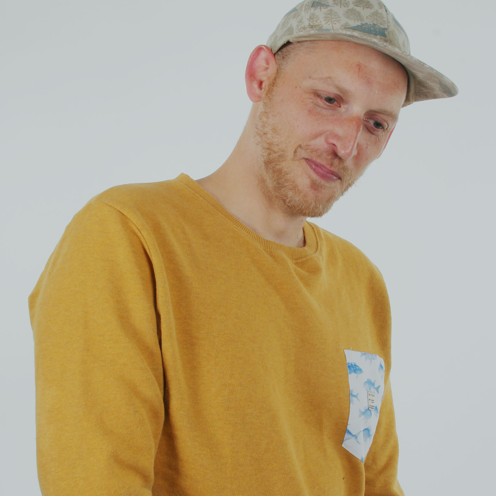
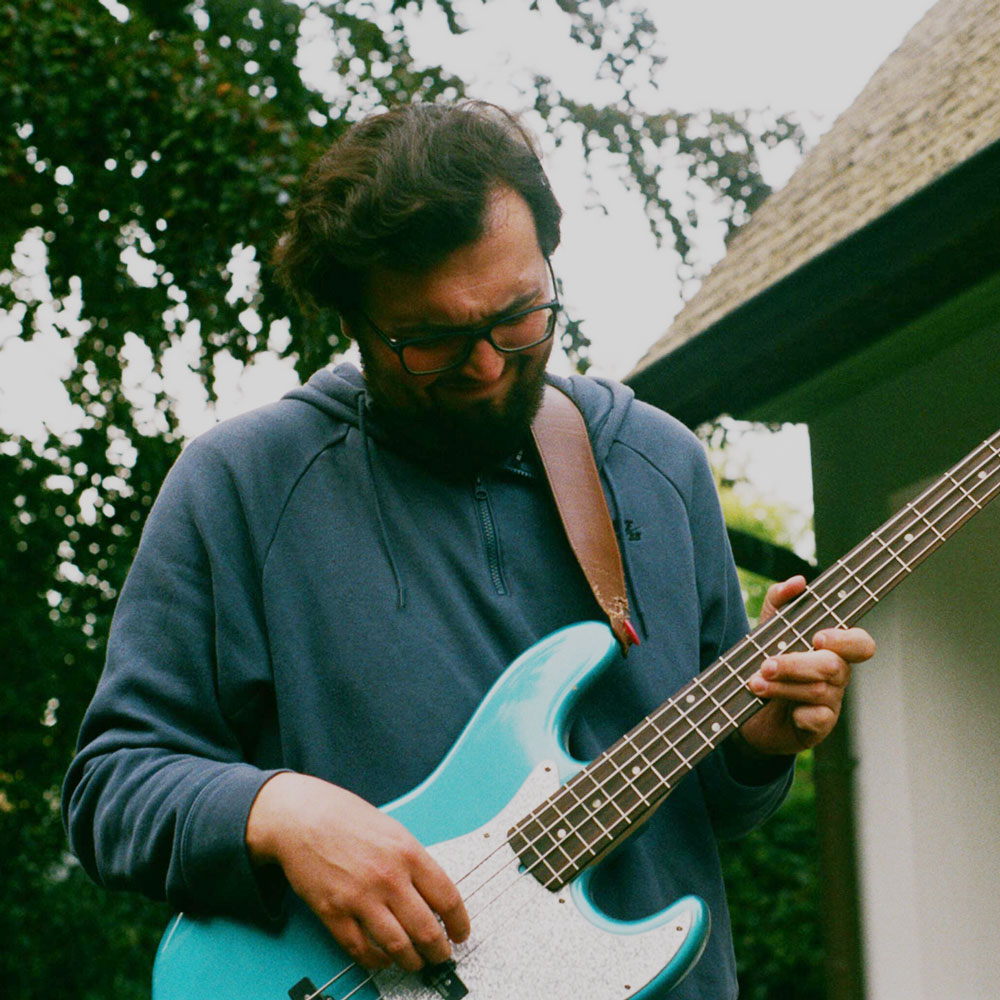
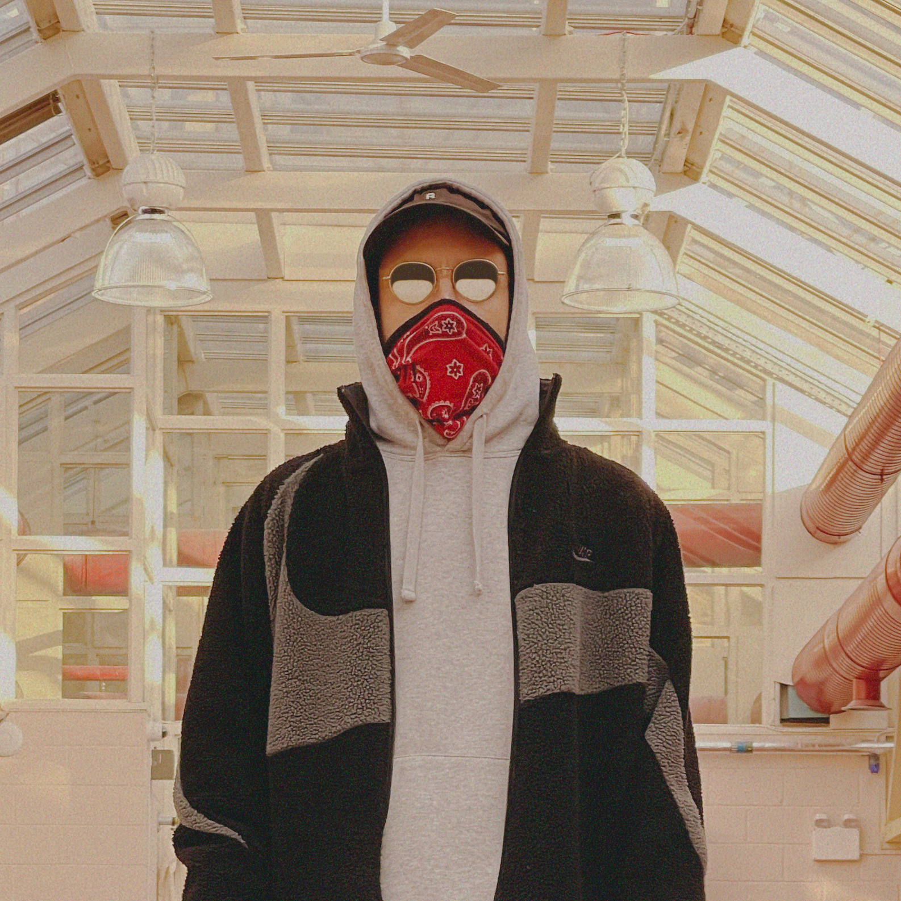

ONDO * Co-Founder

Minimalism isn't his strength. Ondo, who has studied music design, is a multi-instrumentalist with a strong passion for richness, harmonies, complex grooves and a pinch of pathos. His music is never boring. Alongside his productions, Ondo has collaborated with performance collectives and developed and exhibited interactive sound installations internationally.
THUNDERPAD * Co-Founder

DJ Thunderpad loves the music < 3
SUMO * Cook
For almost ten years now, sumo has been an active DJ playing at clubs and festivals like 0711 club, Freund & Kupferstecher, MTV HipHop Open and the New Fall Festival. Brand events hosted by Hugo Boss, Karl Lagerfeld, Vogue, Grazia and Mustang are also part of his commercial DJ career.
Sumo is hosting the “0711” show on egoFM and producing a podcast that goes by the name of “Rillencheck”, which colloquially translates to “check the vinyls”, together with the Mercedes-Benz museum and other DJ’s such as Konstantin Sibold, Leif Müller, Dexter, Fatoni and Torch.
Sumo is hosting the “0711” show on egoFM and producing a podcast that goes by the name of “Rillencheck”, which colloquially translates to “check the vinyls”, together with the Mercedes-Benz museum and other DJ’s such as Konstantin Sibold, Leif Müller, Dexter, Fatoni and Torch.
FINJI * Graphician

Making sounds that are familiar and comfortable; dragging people into brief moments of rhythmic and harmonic discomfort to then bring them back. Often times, this is the process I’m after when producing. I want people to pull down the corners of their mouth, pinch their eyes and nod their heads while they listen to my music. I believe in connecting individuals with distinctive thinking to create innovative work.
MR_HOPE * Preacher

Hopes and dreams flushing down the memory lane. Professional Sound Designer searching perfection in the imperfect.
Praising the Internet as art and violating copyrights by heart, Hope collages everything from then and now to unique, atmospheric flicks. non-border, non-profit, all sense.